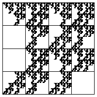
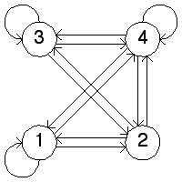
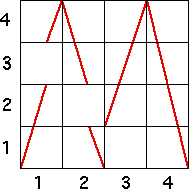
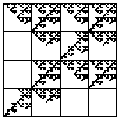
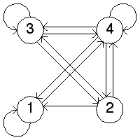
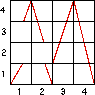

| 1. (a) In the driven IFS we see the empty length 2 addresses are 13, 22, and 31. |
|  |
| The transition graph (right below) has all arrows except |
| A graph to generate this driven IFS must have three characrtreristics: |
| (i) The squares corresponding to the forbidden transitions must be empty. That is, the square in column 1 and row 3, in column 2 and row 2, and in column 3 and row 1 must be empty. |
| (ii) Every other square must be completely crossed vertically (this is the Markov property, guaranteeing that the forbidden pairs specify all forbidden addresses. |
| (iii) The must be the graph of a function. That is, every vertical line must cross the graph exactly once. |
|   |
| (b) In the driven IFS we see the empty length 2 addresses are 21, 22, 13, and 31. |
|  |
| The transition graph (right below) has all arrows except |
| A graph to generate this driven IFS must have three characrtreristics: |
| (i) The squares corresponding to the forbidden transitions must be empty. That is, the square in column 1 and row 3, in column 2 and row 2, and in column 3 and row 1 must be empty. |
| (ii) Every other square must be completely crossed vertically (this is the Markov property, guaranteeing that the forbidden pairs specify all forbidden addresses. |
| (iii) The must be the graph of a function. That is, every vertical line must cross the graph exactly once. |
|   |
Return to Homework 8 Practice.